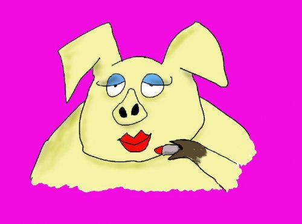

Believe me I was surprised as the next guy. I mean, what was I defending?
All I wanted was to make a nice painting. Come on existence, just one!
Nope. The brush had other ideas.
So Judy got feisty and protective of a painting that didn’t exist.
And while it could appear that that glimpse of arguing-with-reality Judy was about unhappiness with the painting, those words “found myself” in the first sentence above might indicate otherwise.
As if that self-protective grumbler who showed up in class was me. A me that had been missing, and was happened upon at last.
Aha! There’s my self. Found it!
There it was, hiding under the public presentation. There it was, the imperfect, flawed, bad, angry, stupid, loser, unlovable self.
Isn't it weird that what so many of us call the “real me” is actually a list of bad qualities?
As if under all of our carefully applied lipsticks, lives a pig.
Most of us spend lifetimes trying to corral and control that pig, keep it in the pen, hide it, fix it, clean it.
Every once in a while though, that thing pokes its head out, makes a run for it, and escapes, putting a lifetime of carefully-honed identity and public presentation at risk. And just for good measure, bringing muddy shame and guilt along for the jaunt.
Look at it- that self-thing is a mess.
Which may be why it seems totally necessary to reject it, and desperately want the unkempt self to disappear, or at least stay in the pen.
So reject it we do, greatly preferring the nice mask, the cover-up, the polite, pleasant, kind self.
Even though the falseness of the got-it-together person is obvious. Even though the effort of keeping that facade out front is palpable.
We're ok with the presentation of that unreal self, and the effort to keep it going. We're not ok with the imperfect flawed quirky mean identity that we think is the truer, more genuine self.
Which is why it's funny that we rarely come to consider that that grumpy, stupid, loser self is not us either.
That that's also false, and a mask too.
Because characteristics aren’t selves. Qualities aren't selves. They're versions, stories, fables. They're engrossing as hell, as all good stories are, but still, fiction.
You realize what this means, right? It means neither the good-guy version of who we are, or the bad flawed messed-up version of who we are, is actually what we are.
And since most of us have clung so long to the idea that there's a true bad me hiding under the pretend good one,
simply considering the possibility that neither the good nor the bad characteristics of identity are what we are,
can be downright revolutionary.
Liberating, even.
Because if we're not any of that, what are we?
Who knows, free of all pinned-down identity, we might just be left as all of it. We might just be left with vast, expansive, inclusive. We might just discover we're every thrill, every frustration, every laugh and love and rage.
Wouldn't it be something to end up with a whole lot less "healing," a whole lot less project, a whole lot less fixing and improving and enlightening to keep the self busy.
Then the façade becomes beautiful, the lipstick lovely, the pig adorable.
And then we are every great painting, and every crappy painting, and that which got exactly the painting it wanted this weekend.
Regardless of some human’s preference or evaluation.
Wow what a painter.
Holy pig.
Get your every week.

"Ram Tzu knows this -
You are perfect.
Your every defect
is perfectly defined.
Your every blemish
is perfectly placed.
Your every absurd action
is perfectly timed.
Only God could make
Something this ridiculous
Work."
--Ram Tzu, Wayne Liquorman